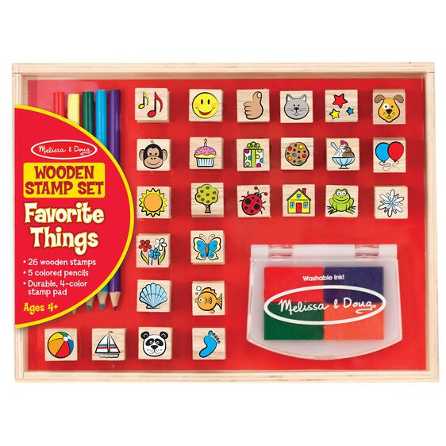
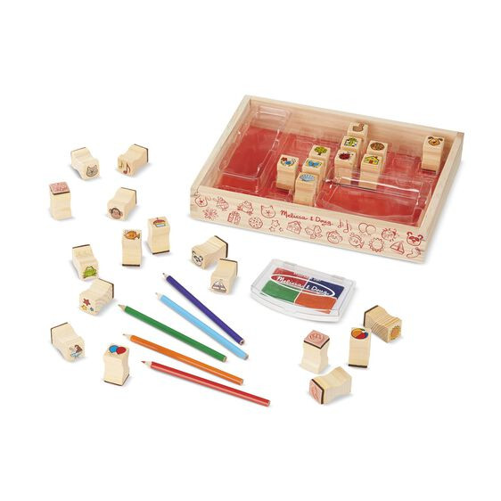

Available
Wooden Stamp Set - Favorite Things
Arts and Crafts
R37526 detailed wooden stamps, including stars, balloons, dog, frog, panda, house, tree, cupcake, and many more Five colored pencils and durable four-color stamp pad with washable ink High-quality materials ensure durability and safety Encourages creativity, fine-motor skills, hand-eye coordination, narrative thinking, and creative expression Sturdy wooden box for storage Product:
Enquire about this product
Wooden Stamp Set - Favorite Things at Kids Corner KZN
Wooden Stamp Set - Favorite Things is part of our Arts and Crafts collection. Kids Corner KZN stocks toys for learning, pretend play, creative play, gifting and everyday childhood discovery in South Africa.
Browse more Arts and Crafts toys